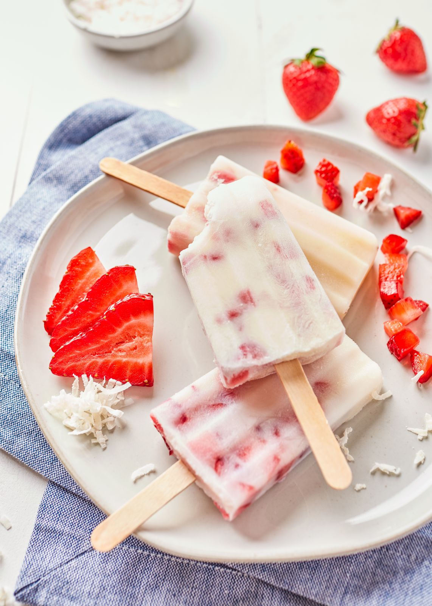

PALETAS DE FRESAS CON CREMA
Ingredientes
1 libra de fresas sin hojas
1 lata (14 onzas) de Leche Condensada Azucarada NESTLÉ LA LECHERA
1 taza de leche evaporada NESTLÉ®️ CARNATION®️ Evaporated Milk
1/4 cucharadita de extracto de vainilla
2 cucharaditas de jugo de limón
Preparación
Paso 1
Mezcla todos los ingredientes en una licuadora hasta que la mezcla este
uniforme . Vierte la mezcla a una taza de medir u otra jarra para vertir la
mezcla en moldes de paletas, de acuerdo con las instrucciones del
fabricante. Colocar en el congelador hasta que esté sólido, al menos 4 horas.
